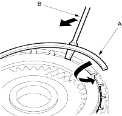
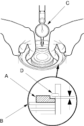

- Install the snap ring (A) with a screwdriver (B).

- Measure the clearance between the clutch end plate (A) and top disc (B) with a dial indicator (C). Zero the dial indicator with the clutch end plate lowered and lift it up to the snap ring (D). The distance that the clutch end plate moves is the clearance between the clutch end plate and top disc.
NOTE: Take measurements in at least 3 places and use the average as the actual clearance.
Clutch End Plate-to-Top Disc Clearance:
Service Limit
1st Clutch: 0.65-0.85 mm (0.026-0.033 in.) 2nd Clutch: 0.65-0.85 mm (0.026-0.033 in.) 3rd Clutch: 0.4-0.6 mm (0.016-0.024 in.) 4th Clutch: 0.4-0.6 mm (0.016-0.024 in.) 1st-hold Clutch: 0.5-0.8 mm (0.020-0.031 in.)

- If the clearance is not within the service limits, select a new clutch end plate from the following table.
NOTE: If the thickest clutch end plate is installed, but the clearance is still over the standard, replace the clutch discs and clutch plates.
1ST, 2ND, 3RD and 4TH CLUTCH END PLATES
| Mark | Part Number | Thickness |
| 1 | 22551-P4R-003 | 2.1 mm (0.083 in.) |
| 2 | 22552-P4R-003 | 2.2 mm (0.087 in.) |
| 3 | 22553-P4R-003 | 2.3 mm (0.091 in.) |
| 4 | 22554-P4R-003 | 2.4 mm (0.094 in.) |
| 5 | 22555-P4R-003 | 2.5 mm (0.098 in.) |
| 6 | 22556-P4R-003 | 2.6 mm (0.102 in.) |
| 7 | 22557-P4R-003 | 2.7 mm (0.106 in.) |
| 8 | 22558-P4R-003 | 2.8 mm (0.110 in.) |
| 9 | 22559-P4R-003 | 2.9 mm (0.114 in.) |
1ST-HOLD CLUTCH END PLATES
| Mark | Part Number | Thickness |
| 1 | 22551-PS5-003 | 2.1 mm (0.083 in.) |
| 2 | 22552-PS5-003 | 2.2 mm (0.087 in.) |
| 3 | 22553-PS5-003 | 2.3 mm (0.091 in.) |
| 4 | 22554-PS5-003 | 2.4 mm (0.094 in.) |
| No mark | 22555-PS5-003 | 2.5 mm (0.098 in.) |
| 6 | 22556-PS5-003 | 2.6 mm (0.102 in.) |
| 7 | 22557-PS5-003 | 2.7 mm (0.106 in.) |